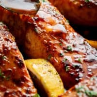

Honey Garlic Salmon

Time
- Prep Time: 10
- Cook Time: 10
- Total Time: 20
ingredients
- 4 wild caught salmon fillets about 1/2 pound or 250 grams each, skin off or on
- 1/2 salt, 1/2 pepper, 1/2 paprika, 1/2 lemon pepper, to season
- 5 tablespoons butter
- 10 cloves garlic, finely chopped or minced
- 10 tablespoons honey
- 2 tablespoon water
- 5 teaspoons soy sauce
- 2 tablespoon lemon juice
- Lemon wedges to serve
Instructions
- Arrange oven shelf to the middle of your oven. Preheat oven to broil/grill settings on medium heat.
- Season salmon with salt, pepper, paprika and lemon pepper. Set aside.
- Heat the butter in a skillet or pan over medium-high heat until melted.
Add the garlic and sauté for about a minute, until fragrant. Pour in the honey, water
and soy sauce; allow the flavours to heat through and combine.
Add in the lemon juice; stir well to combine all of the flavours together.
- Add the salmon steaks to the sauce in the pan;
cook each fillet (skin-side down if there's any skin) for 3-4 minutes or until golden,
while basting the tops with the pan juices.
- Optional -- Add the lemon wedges around the salmon
(adds a stronger lemon taste).
- Baste salmon one more time then transfer salmon steaks to a pan (make sure you save all the sauce for later),
then set your oven to broil / grill for a further 5-6 minutes,
or until the tops of the salmon are nicely charred,
and the salmon is cooked to your liking.
- To serve, drizzle with the sauce and a squeeze of lemon juice.
Serve with steamed vegetables; over rice or with a salad.(to make your meal even better drizzle your rice with the
sauce you'll thank me later also if you want to know what kind of rice check out this link
- make your meal ten times by drizzling the leftover sauce on the salmon and some rice. (you'll thank me later)
also if you want to know what kind of rice check out this link()
Back to Homepage